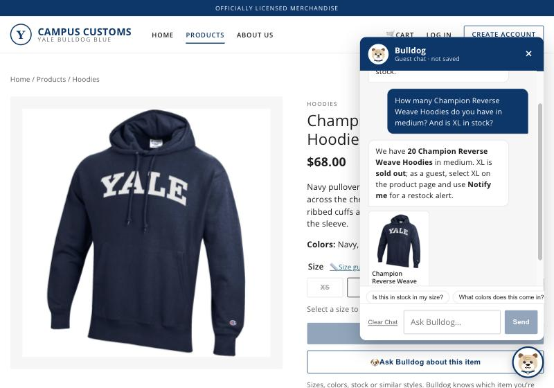
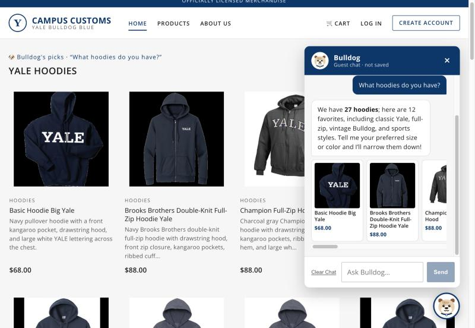
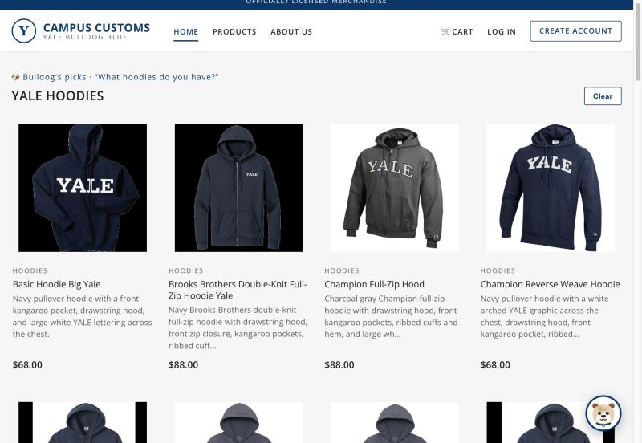
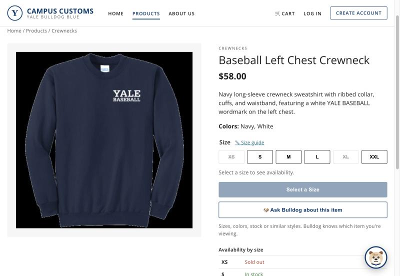
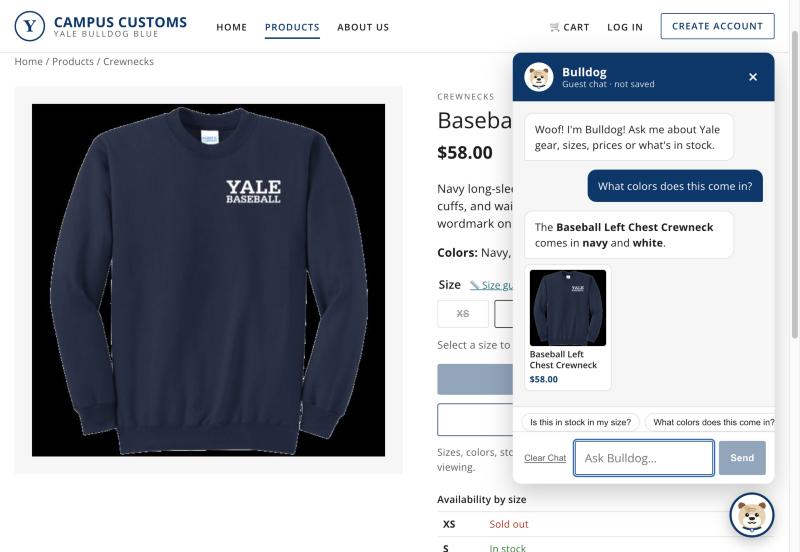

Problem 11 · Tested on the running site (React front end at localhost:5174, FastAPI + Pydantic AI agent at localhost:8000, model Sol 5.6 via Portkey) · Oct 22, 2026 · Logged out as a guest, desktop window 1100×760.
#
Check
Result
1
Chat checks the inventory level of an item
PASS
2
Dynamic search result cards appear after a question
PASS
3
Problem 9 usability feature: "Ask Bulldog about this item" + page-aware quick questions
PASS
Check 1: Chat checks the inventory level of an item

PASSAsked "How many Champion Reverse Weave Hoodies do you have in medium? And is XL in stock?", Bulldog replied "We have 20… in medium. XL is sold out." This matches campus_customs.db exactly (M = 20, XL = 0). The server log shows the agent called check_stock for each size, so the answer came from the database, not from memory.
Check 2: Dynamic search result cards appear after a question

PASSAfter "What hoodies do you have?", the agent's structured answer turned into a "Bulldog's picks · Yale hoodies" grid of 12 product cards on the page, plus mini cards in the chat. The reply honestly notes there are 27 hoodies in total, which matches the catalogue.

With the chat closed, each card shows an image, name, short description and price, all filled in from the database by the server. The prices match the database (Basic Hoodie Big Yale $68, Brooks Brothers Full-Zip $88, Champion Full-Zip Hood $88, Champion Reverse Weave Hoodie $68), and every card links to its product page.
Check 3: Problem 9 usability feature, "Ask Bulldog about this item"

PASSEvery product page now has an "Ask Bulldog about this item" button (Problem 9, F1), shown here on the Baseball Left Chest Crewneck ($58.00, colors Navy and White).

The button opened the chat with quick questions for this item. Tapping "What colors does this come in?" got "The Baseball Left Chest Crewneck comes in navy and white", which matches the page, without typing the product name. The log shows the agent called get_current_page, so it knew which item the shopper was viewing.